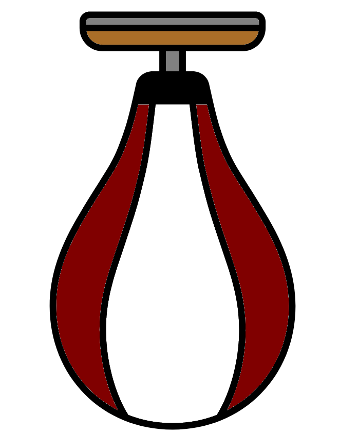

Exercise 2
The directory “~/Linux/6_final_exercise/” has all the files you need. Below is a set of tasks and questions that will require all the skills you have gained from this practical.
- See what files are in the directory.
- Rename the file “3-P£_CACTTCGA_L001_R1_001.fastq” as “3-P3_CACTTCGA_L001_R1_001.fastq”.
- Make a backup of the files in a directory called backup.
- How many reads are in the samples?
- Remove the fastq files with no data.
- Update the backup files with the previous change.
- Check if the 1st read names match in the paired files.
- Check if the last read names match in the paired files.
- In file “1-P1_ATGCCTGG_L001_R1_001.fastq” look for sequence headers with the term ‘psychrobacter’.
- In the sample 1-P1 remove any fastq entries where the term ‘psychrobacter’ appears in the fastq header. Do this for the R1 and R2 files.
- Print to screen the fastq header, sequence and quality data for the 25th sequence in sample 2-P2 for both the R1 and R2 file. Do this with one command for R1 and a separate command for R2.
Answers
Click on the below expandable boxes to view my solutions for the exercise. These are not the definitive solution but only examples of solutions. If your method works and you understand why then you have done it correctly.
Ensure you are in the correct directory before carrying out the below commands
cd ~/Linux/6_final_exerciseSee what files are in the directory
ls- Rename the file 3-P£_CACTTCGA_L001_R1_001.fastq to 3-P3_CACTTCGA_L001_R1_001.fastq
mv 3-P£_CACTTCGA_L001_R1_001.fastq \
3-P3_CACTTCGA_L001_R1_001.fastqMake a backup of the files in a directory called backup
mkdir backup
cp 1-P1_ATGCCTGG_L001_R1_001.fastq backup/
cp 1-P1_ATGCCTGG_L001_R2_001.fastq backup/
cp 2-P2_AAGGACAC_L001_R1_001.fastq backup/
cp 2-P2_AAGGACAC_L001_R2_001.fastq backup/
cp 3-P3_CACTTCGA_L001_R1_001.fastq backup/
cp 3-P3_CACTTCGA_L001_R2_001.fastq backup/
cp 4-E1_ATTGGCTC_L001_R1_001.fastq backup/
cp 4-E1_ATTGGCTC_L001_R2_001.fastq backup/
cp metadata.txt backup/This can be done a lot quicker with the use of wildcard characters (Covered in Advanced Linux section)
mkdir backup
cp *fastq backup
cp *txt backupHow many reads are in the samples? The below command will give the number of lines in the files, this number can then be divided by 4 (mentally or using a calculator). These values will be the same for the R2 files as they are for the matching R1 file.
wc -l 1-P1_ATGCCTGG_L001_R1_001.fastq \
2-P2_AAGGACAC_L001_R1_001.fastq \
3-P3_CACTTCGA_L001_R1_001.fastqAn advanced method using regular expressions, wildcard characters and grep
grep -c "^@[0-9]*_" *R1*.fastqRemove the fastq files with no data Check which files have no data
wc \
1-P1_ATGCCTGG_L001_R1_001.fastq 1-P1_ATGCCTGG_L001_R2_001.fastq \
2-P2_AAGGACAC_L001_R1_001.fastq 2-P2_AAGGACAC_L001_R2_001.fastq \
3-P3_CACTTCGA_L001_R1_001.fastq 3-P3_CACTTCGA_L001_R2_001.fastq \
4-E1_ATTGGCTC_L001_R1_001.fastq 4-E1_ATTGGCTC_L001_R2_001.fastq Remove empty files
rm \
4-E1_ATTGGCTC_L001_R1_001.fastq 4-E1_ATTGGCTC_L001_R2_001.fastqUpdate the backup files with the previous change
rm backup/4-E1_ATTGGCTC_L001_R1_001.fastq \
backup/4-E1_ATTGGCTC_L001_R2_001.fastq Check if the 1st read names match in the paired files
head -n 1 \
1-P1_ATGCCTGG_L001_R1_001.fastq 1-P1_ATGCCTGG_L001_R2_001.fastq \
2-P2_AAGGACAC_L001_R1_001.fastq 2-P2_AAGGACAC_L001_R2_001.fastq \
3-P3_CACTTCGA_L001_R1_001.fastq 3-P3_CACTTCGA_L001_R2_001.fastq Check if the last read names match in the paired files
tail -n 4 \
1-P1_ATGCCTGG_L001_R1_001.fastq 1-P1_ATGCCTGG_L001_R2_001.fastq \
2-P2_AAGGACAC_L001_R1_001.fastq 2-P2_AAGGACAC_L001_R2_001.fastq \
3-P3_CACTTCGA_L001_R1_001.fastq 3-P3_CACTTCGA_L001_R2_001.fastq In file 1-P1_ATGCCTGG_L001_R1_001.fastq look for sequence headers with the term ‘psychrobacter’
grep “psychrobacter” 1-P1_ATGCCTGG_L001_R1_001.fastqIn the sample 1-P1 remove any fastq entries where the term ‘psychrobacter’ appears in the fastq header. Do this for the R1 and R2 file. - Using nano use “Ctrl+W” to search for psychrobacter. Then use “Ctrl+K” to cut the lines followed by “Ctrl+W” and “Ctrl+X” to save and exit. - Using vim with “/” to search for psychrobacter, “dd” to delete lines and “:wq” to save the file and exit it. 11. Print to screen the fastq header, sequence and quality data for the 25th sequence in sample 2-P2 for both the R1 and R2 file. Do this with one command. @24_ecoli is grepped as the first sequence is @0_ecoli
grep -A 3 "@24_ecoli" 2-P2_AAGGACAC_L001_R1_001.fastq
grep -A 3 "@24_ecoli" 2-P2_AAGGACAC_L001_R2_001.fastq